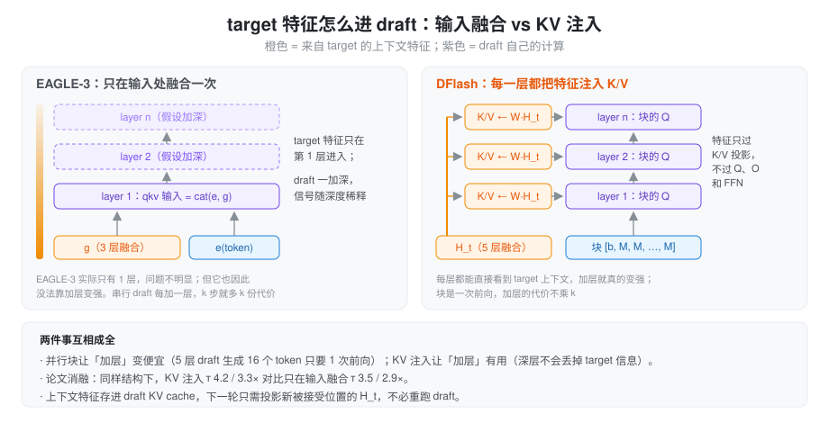

问题：串行 draft 的 k 开不大
从 EAGLE 到 MTP 再到 EAGLE-3，draft 都是自回归的：猜 k 个 token 就要 k 次 draft 前向。这带来两个互相牵制的限制：
- k 开不大。每多猜一个就多一次前向，越往后接受率越低，边际收益很快变成负的，EAGLE 系通常只开 3～5 步。
- draft 不敢加深。draft 每加一层，k 次前向里每一次都要多算这一层，所以 EAGLE 系的 draft 只有 1 层。能力被卡死在「一层 transformer 能做到的程度」。
DFlash（Chen、Liang、Liu，UCSD，arXiv 2602.06036）的出发点是：如果 k 个 token 能在一次前向里出来，draft 的代价就和 k 基本无关，这两个限制同时解开。
insight：扩散模型单独用不行，当 draft 刚好
块扩散（block diffusion）语言模型可以一次前向去噪出一整块 token，但作为独立模型，它的质量明显不如自回归模型。论文的观察是：投机解码里 draft 的质量不决定结果，target 的 verify 保证了无损，所以扩散模型最大的短板在这里不要紧。甚至不需要多轮去噪，一次去噪就够了：猜得不完美的位置交给 verify 剔掉。
光靠扩散还不够。一个从零理解上下文的小扩散模型猜不准，论文里不用 target 特征时 GSM8K 上只有 2.83×。第二个 insight 被作者概括为 the target knows best：target 的 hidden 里已经编码了后续多个 token 的信息（EAGLE-3 的多层融合也是这个思路），draft 只要能充分读到这些特征即可。
把两者合起来：并行块让 draft 加层变便宜，于是 draft 可以有 5 层甚至 8 层；但前提是每一层都能直接看到 target 特征，否则加层也没用。这引出了 DFlash 的核心结构 KV 注入。
draft 结构

- target 特征：从 target 取 5 层 hidden，在第 2 层到倒数第 3 层之间均匀分布，拼成 5D 后过 W_c ∈ ℝ^{D×5D} 和 RMSNorm，得到上下文特征 H_t。
- KV 注入：在 draft
的每一层里，K 和 V 都是
concat(W^K·H_t, W^K·H_d)（V 同理），H_d 是块内位置自己的 hidden。上下文特征只过 K/V 投影，不过 Q、输出投影和 FFN，算完就存进 draft 的 KV cache。EAGLE-3 只在输入处融合一次，信号随深度稀释；DFlash 每层都重新看一遍 target。 - 块输入：第 1 位是 anchor，也就是上一轮 verify 的 bonus token，其余位置都是 mask token。块内是双向注意力，块对上下文是正常的因果注意力。
- 输出：块内第 2 位往后每个位置的 hidden 过 lm_head，一次得到 block_size − 1 个 draft token。embedding 和 lm_head 与 target 共享并冻结。
- 规模：block size 16（LLaMA 上用 10），5 层 draft（Coder 模型用 8 层）。
和 EAGLE 系比，draft 的状态维护也换了一种方式：上下文全部在 draft KV 里，verify 之后只需要把新被接受位置的 target hidden 投影成 K/V 写进去，不需要再跑一次 draft 前向。
训练
- 随机 anchor：训练时不是按固定间隔切块，而是在每条序列上随机采 512 个 anchor 位置，每个 anchor 后面接一个 mask 块。推理时 anchor 落在哪里取决于上一轮接受到哪，随机采样让训练覆盖这种分布。对比固定切块，加速比 4.69× vs 4.13×。
- 位置加权损失：块内越靠前的位置越重要（前面错了后面就没用），第 k 位的权重 w_k = exp(−(k−1)/γ)，block 16 时 γ = 7。
- 数据：约 80 万条，回复由 target 重新生成；6 个 epoch，lr 6e-4。
结果
- Qwen3-8B，T=0：平均 4.86×（τ 6.49），最高是 MATH-500 上的 6.08×（τ 7.87）；T=1 时平均 4.03×。摘要里的「超过 6×」指的是单项峰值，不是平均。
- 对比 EAGLE-3：同设置下 EAGLE-3 平均 1.76×（树 16 节点）和 2.02×（树 60 节点）。摘要说比 EAGLE-3 快「最高 2.5×」，这个倍数取决于选哪个 EAGLE-3 配置和哪个任务。
- 层数：8 层的 τ 最高，但 5 层的端到端加速最好。draft 再便宜也不是零成本。
- 服务化：SGLang、B200、Qwen3-8B Math500，并发 1/4/8/16/32 时分别是 5.1/4.5/4.5/3.9/2.8×。
局限也很直接：并发越高收益越小；块越大，后面那些大概率被拒绝的位置越浪费 verify 算力；超过 4K 的上下文需要再微调。下一篇的 DSpark 正是从「块内越往后越不准」和「大 batch 下 verify 浪费」这两点切入的。
在 SGLang 里
DFLASH 是独立的算法和
worker（speculative/dflash_worker_v2.py 里的
DFlashWorkerV2），不再复用 EAGLE 的
worker。
draft 模型是
models/dflash.py 的
DFlashDraftModel，结构和论文一一对应：
fc+hidden_norm：把拼起来的 target hidden 投影成上下文特征，对应论文的 W_c 和 RMSNorm。- 每层的
kv_proj_only：只算上下文特征的 K/V，再做 k_norm 和 RoPE，写进 draft KV（set_kv_buffer_prefix_valid）。非量化权重直接切出qkv_proj.weight里 K/V 那一段做一次 GEMM；量化权重切不了，就回退成算完整 qkv 再丢掉 Q。 - full attention 层用
ENCODER_ONLY，即块内双向；sliding 层仍是带窗口的因果注意力。 - 模型自己没有 embedding 和 lm_head，都用
target 的。mask token 默认是
<|MASK|>。
取哪几层：build_target_layer_ids（speculative/dflash_utils.py）返回的层数和
draft 层数相同。draft 只有 1 层时取中间层 N//2；否则在 [1,
N−3] 上均匀取。SGLang 在「第 i 层之前」捕获，hook 里会再加
1。
每个 decode step：
1 次 draft 块前向 + 1 次 target verify + 1 次「投影写 KV」
prefill 时把整个 prompt 的 target hidden 投影写进 draft
KV；verify 之后按 commit_lens
只写被接受的位置。这里没有 EAGLE 那样的 draft extend
前向。
参数：DFlash 强制
num_steps = topk = 1，这两个字段对它没有意义，只是通用的显存计算要用；block
size 就是 num_draft_tokens，不指定时从 draft
配置推断，默认 16。限制是只支持 CUDA、不支持 DP
attention、要求 PP = 1。draft 是 sliding window 时可以打开
--speculative-draft-window-size，draft KV
只按窗口分配（draft_swa_pool.py），见 总览里的说明。
后续工作
DFlash 只验一条链，块内每个位置的分布里其实还有别的候选。两篇后续分别在这两处继续推：
- DDTree（arXiv 2604.12989）：把 DFlash 每个位置的输出分布展开成一棵树，用 best-first 堆在固定节点预算内选最可能的分支，target 用 ancestor-only mask 一次验完。draft 不变，只改树怎么长，思路和 EAGLE-2 之于 EAGLE 一样。
- DFlare（arXiv 2606.02091）：DFlash 每一层注入的都是同一份 H_t，来自少数几层 target。DFlare 让每个 draft 层学自己的一组 target 层加权组合，draft 加深后收益更稳定；用 240 万条数据训练，Qwen3-8B 平均 5.46×，比 DFlash 快约 8%。
小结
DFlash 把两个看似不相关的想法拼在了一起：块扩散让 k 个 token 一次前向出来，于是 draft 可以加深、k 可以开到 16；KV 注入让每一层都直接读 target 的多层特征，于是加深真的有用，状态维护也只剩投影写 KV。它的代价在块内：同一次前向里的各位置看不到彼此最后取了什么，越往后越容易各说各的，而大 batch 下这些后面的位置还要白白占 verify 的算力。这两点是 DSpark 要补的。